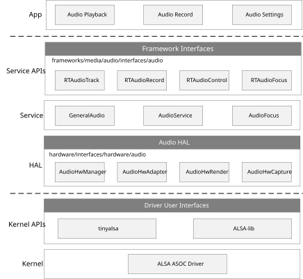
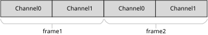
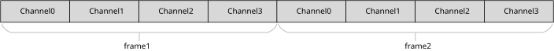
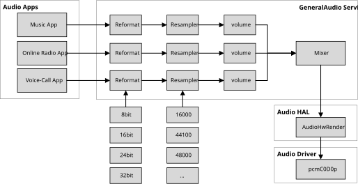
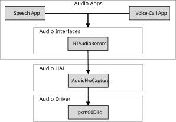
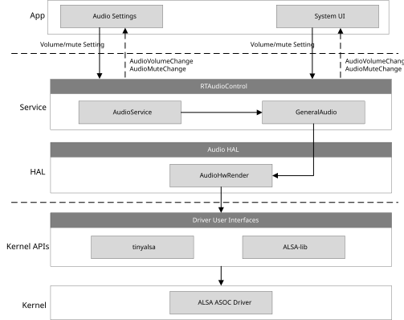
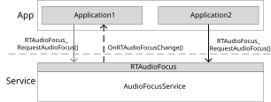
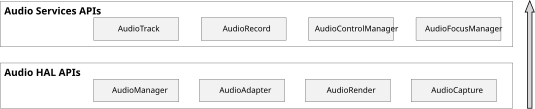
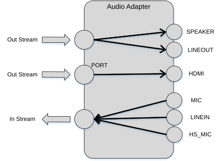

Overview
Audio framework is a whole audio architecture aiming to provide the different layers of audio interfaces for applications. The interfaces involve Audio HAL and Audio Service.
Audio HAL: defines unified audio hardware interfaces. It interacts with audio driver to do audio streaming or audio settings.
Audio Service: provides service for sound format translation, sound mixing, volume and mute settings, and focus management.
The audio interfaces and the entire implementation are shown in the following figure.
{kind=link}

The whole architecture includes the following sub-modules:
App
Apps which need to use audio interfaces to play sound.
Apps which need to use audio interfaces to capture microphone data.
Apps which need to use audio interfaces to control sound volumes and mute status.
Service APIs
RTAudioTrack provides interfaces to play sound.
RTAudioRecord provides interfaces to capture sound.
RTAudioControl provides interfaces to control sound volumes and mute status.
RTAudioFocus provides interfaces to manage audio playback streaming priorities.
Service
GeneralAudio provides audio reformat, resample, volume and mixer functions for audio stream playback.
AudioService provides audio volume, audio mute settings functions for audio stream playback.
AudioFocusService handles audio focus priorities of different audio playback sources. Every application should get the grant from AudioFocusService first, then play.
HAL
AudioHwManager provides interfaces that manage audio adapters through a specific adapter driver program loaded based on the given audio adapter descriptor.
AudioHwAdapter provides interfaces that manage audio adapter capabilities, including initializing ports, creating rendering and capturing tasks, and obtaining the port capability set.
AudioHwRender provides interfaces that gets data from service layer and render data to audio driver user interfaces.
AudioHwCapture provides interfaces to capture data from audio driver user interfaces, and deliver the data to service layer.
Kernel APIs
tinyalsa interfaces provide interfaces to user space to interact with audio driver to do audio streaming playback, record, volume and mute control.
ALSA-lib interfaces provide more specific interfaces to user space to interact with audio driver to do audio streaming playback, record, volume and mute control.
Kernel
Audio driver to control audio hardware to do playback, record, volume and mute control. It provides interfaces to user space via tinyalsa or ALSA-lib.
Terminology
There are some widely-used audio terms in this documents, the meaning of them are listed below.
Terms |
Introduction |
|---|---|
ALSA |
Advanced Linux Sound Architecture. |
ASOC |
ALSA System on Chip. |
PCM |
PCM (Pulse Code Modulation) audio data is a raw stream of uncompressed audio sample data, which is standard digital audio data converted from analog signals through sampling, quantization, and encoding. |
channel |
A channel sound is an independent audio signal captured or played in different spatial positions during recording or playing, so the number of channels is the number of sound sources during sound recording or the number of speakers during playback. |
mono |
Mono means only one single channel sound. |
stereo |
Stereo means two channels. |
bit depth |
Bit depth (sample depth) represents how finely the sound intensity is recorded in the sample. Sampling depth can be understood as the resolution of processing the sound. The larger the value, the higher the resolution, and the more realistic the sound recorded and played. |
sample |
A number representing the audio value of a single channel at a point in time. |
sample rate |
The audio sampling rate refers to the number of frames that the signal is sampled per unit time. The higher the sampling frequency, the more realistic and natural the waveform will be. |
frame |
A frame is a sound unit whose length is the product of the sample length (number of samples) multiplies the number of channels. |
gain |
Audio signal gain control to adjust the signal level. |
interleaved |
It is a recording method of audio data. In the interleaved mode, the data is stored in a continuous manner, that is, the left channel sample and the right channel sample of frame 1 are first stored, and then the storage of frame 2 is started. |
latency |
Time delay when a signal passes through the whole system. |
overrun |
The buffer is too full to let buffer producer to write more data. |
underrun |
The buffer producer is too slow to write data to the buffer, so that the buffer is empty when consumer wants to consume data. |
xrun |
Overrun or underrun. |
volume |
Volume, also known as sound intensity and loudness, refers to the human ear’s subjective perception of the intensity of the sound heard, and its objective evaluation scale is the amplitude of the sound. |
hardware volume |
The volume of audio codec. |
software volume |
The volume set in software algorithm. |
mute |
Forces the volume to zero. |
ramp |
Gradually increase or decrease the level of volume. Volume ramps are often used when pausing and resuming music to avoid hard-to-hear transitions. |
volume group |
A group of stream types, which shares the same volume. For example, media and phone call shares the same volume, they are in the same volume group. |
resample |
Convert the sample rate. |
reformat |
Convert the bit depth of the sample. |
mix |
Mix several audio streaming together. User can hear several audio streaming playing together. |
audio codec |
In this chapter, audio codec means the DAC and ADC controller inside the chip. |
Data Format
This section describes the data format audio framework and audio HAL supports. The common part for audio framework and audio HAL is described here. And the different parts will be described in their own sections.
Both audio framework and audio HAL support interleaved streaming data.
The two channel interleaved data is illustrated in the following figure, and the four channel interleaved data is illustrated in the next following figure.
{kind=link}

{kind=link}

Framework Format
This section describes the format Audio Framework supports, before playback, or capture, make sure your sound format is supported.
Audio Framework has the following types of bit depth:
RTAUDIO_FORMAT_INVALID - invalid bit depth of audio stream
RTAUDIO_FORMAT_PCM_8_BIT - audio stream has 8-bit depth
RTAUDIO_FORMAT_PCM_16_BIT - audio stream has 16-bit depth
RTAUDIO_FORMAT_PCM_32_BIT - audio stream has 32-bit depth
RTAUDIO_FORMAT_PCM_FLOAT - audio stream has 32-bit float format
RTAUDIO_FORMAT_PCM_24_BIT_PACKED - audio stream has 24-bit depth
RTAUDIO_FORMAT_PCM_8_24_BIT - audio stream has 24-bit + 8-bit depth
The following table describes the supported formats for playback and recording. Y means the format is supported; N means the format is not supported.
Bit depth |
Playback |
Capture |
|---|---|---|
RTAUDIO_FORMAT_PCM_8_BIT |
Y |
N |
RTAUDIO_FORMAT_PCM_16_BIT |
Y |
Y |
RTAUDIO_FORMAT_PCM_32_BIT |
Y |
Y |
RTAUDIO_FORMAT_PCM_FLOAT |
Y |
N |
RTAUDIO_FORMAT_PCM_24_BIT_PACKED |
Y |
N |
RTAUDIO_FORMAT_PCM_8_24_BIT |
N |
Y |
Sample rate is another important format of audio streaming. For playback and recording, audio framework supports the following sample rates. Y means the sample rate is supported; N means the sample rate is not supported.
Sample rate |
Playback |
Capture |
|---|---|---|
8000 |
Y |
Y |
11025 |
Y |
Y |
16000 |
Y |
Y |
22050 |
Y |
Y |
32000 |
Y |
Y |
44100 |
Y |
Y |
48000 |
Y |
Y |
88200 |
Y |
Y |
96000 |
Y |
Y |
192000 |
N |
N |
To do audio streaming, channel count parameter setting is necessary, too. For playback and recording, audio framework supports the following channel counts. Y means the channel count is supported; N means the channel count is not supported.
Channel count |
Playback |
Capture |
|---|---|---|
1 (mono) |
Y (mono) |
N |
2 (stereo) |
Y (left, right) |
Y (left, right) |
4 (quad) |
N |
Y (MIC1, MIC2, REF, REF) |
HAL Format
Audio Hal has the following types of bit depth:
AUDIO_HW_FORMAT_INVALID - invalid bit depth of audio stream
AUDIO_HW_FORMAT_PCM_8_BIT - audio stream has 8 -bit depth
AUDIO_HW_FORMAT_PCM_16_BIT - audio stream has 16 -bit depth
AUDIO_HW_FORMAT_PCM_32_BIT - audio stream has 32 -bit depth
AUDIO_HW_FORMAT_PCM_FLOAT - audio stream has 32 -bit float format
AUDIO_HW_FORMAT_PCM_24_BIT_PACKED - audio stream has 24 -bit depth
AUDIO_HW_FORMAT_PCM_8_24_BIT - audio stream has 24 -bit + 8 -bit depth
If user uses the Audio HAL interface, check the bit depth HAL supported for Playback and Capture. Y means the format is supported; N means the format is not supported.
Bit depth |
Playback |
Capture |
|---|---|---|
AUDIO HW_FORMAT_PCM_8_BIT |
N |
N |
AUDIO HW_FORMAT_PCM_16_BIT |
Y |
Y |
AUDIO HW_FORMAT_PCM_32_BIT |
N |
N |
AUDIO HW_FORMAT_PCM_FLOAT |
N |
N |
AUDIO HW_FORMAT_PCM_24_BIT_PACKED |
N |
N |
AUDIO HW_FORMAT_PCM_8_24_BIT |
Y |
Y |
Sample rate is another important format of HAL audio streaming. For playback and recording, audio HAL supports the following sample rates. Y means the sample rate is supported; N means the sample rate is not supported.
Sample rate |
Playback |
Capture |
|---|---|---|
8000 |
Y |
Y |
11025 |
Y |
Y |
16000 |
Y |
Y |
22050 |
Y |
Y |
32000 |
Y |
Y |
44100 |
Y |
Y |
48000 |
Y |
Y |
88200 |
Y |
Y |
96000 |
Y |
Y |
192000 |
N |
N |
To do audio streaming, channel count parameter setting is necessary, too. For playback and recording, audio HAL supports the following channel counts. Y means the channel count is supported; N means the channel count is not supported.
Channel count |
Playback |
Capture |
|---|---|---|
1 (mono) |
N |
N |
2 (stereo) |
Y (left, right) |
Y (left, right) |
4 (quad) |
N |
Y (MIC1, MIC2, REF, REF) |
Architecture
Playback Architecture
The block diagram of audio playback is shown in the following figure.
{kind=link}

The audio playback architecture includes the following sub-modules:
Audio Apps
Apps which need to use audio interfaces to play sound. The sound includes music, phone call, beep, speech, and so on. They can play at the same time if necessary.
GeneralAudio Service
GeneralAudio Service is responsible for audio playback sound mixing.
GeneralAudio Service supports at most 32 sound playing together.
Before mixing, all sound will be converted to one unified audio format, which is 16bit, 48KHz, 2channel currently. Sub-modules reformat, resampler are responsible to do the convertion. There is also volume sub-module in GeneralAudio to adjust volumes for different audio types, for example, music, speech may have different volumes.
GeneralAudio Service supports sound rate from 8kHz ~ 96kHz, channel mono/stereo, format 8-bit, 16-bit, 24-bit and 32-bit float.
Audio HAL
Audio HAL gets playback data from GeneralAudio service, and sends the data to audio driver.
Audio Driver
Audio Driver gets playback data from audio Hal, and sends data to audio hardware.
Record Architecture
The block diagram of audio record is shown in the following figure.
{kind=link}

The audio record architecture includes the following sub-modules:
Audio Apps
Apps which need to use audio interfaces to capture sound. The sound can be microphone data, headset microphone data, or other data captured from I2S.
RTAudioRecord
RTAudioRecord captures data from Audio HAL, and provides data to audio applications, which want to record data.
Audio HAL
Audio HAL gets record data from Audio driver, and sends the data to RTAudioRecord.
Audio Driver
Audio Driver gets record data from Audio hardware, and sends data to audio HAL.
Control Architecture
The block diagram of audio control is shown in the following figure.
{kind=link}

The audio control architecture includes the following sub-modules:
App
Apps which need to use audio interfaces to set audio streaming volume and mute, as well as update UI according to audio volume callback.
Service
Applications interact with AudioService through RTAudioControl.
AudioService manages the volume groups and mute status. the first time system boot, it gives initial volume and mute according to
/etc/factory.xml. AudioService also stores the volume and mute status when user changes them, set the user volume and mute when system reboot.AudioService decides the volume and mute to set, and finally gives the information to GeneralAudio to do the real volume adjustment.
When volume and mute successfully set, AudioService will callback to Applications to tell the current status.
GeneralAudio does the software volume mixing work, if AudioService tells GeneralAudio to set hardware volume, it will interact with Audio HAL to set the hardware volume.
HAL
Audio HAL sets volume to hardware by calling Kernel APIs.
Kernel
Audio Driver sets volume to audio codec hardware.
Hardware Volume
The RTAudioControl provides interfaces to set and get hardware volume. According to the spec, the volume index range of DAC is 0-175. The framework will set the default hardware volume as 128. User can adjust the hardware volume only when it’s necessary. When the hardware volume changes, all stream types’ final volume will change.
The RTAudioControl provides interfaces to set and get hardware mute. The framework will set the default mute status as false, which means unmute. When the hardware mute status changes, all stream types’ final mute status will change.
Software Volume Group
Volume can be adjusted according to the volume groups. The audio stream types are divided into groups as follows. Categories in the same VolumeGroup share the same volume and mute status. User can directly adjust the volume by volume group name.
VolumeGroups |
RTAudioTrack category |
|---|---|
RTAUDIO_GROUP_MEDIA |
|
RTAUDIO_GROUP_TTS |
|
RTAUDIO_GROUP_BEEP |
|
The VolumeGroup’s volume can also be adjusted according to the type of RTAudioTrack category. For example, if user adjusts the RTAUDIO_CATEGORY_MEDIA’s volume, AudioService will automatically adjust both the RTAUDIO_CATEGORY_MEDIA’s and RTAUDIO_CATEGORY_COMMUNICATION’s volume, and RTAUDIO_GROUP_MEDIA’s volume will be updated, too.
Every VolumeGroup has its default volume and mute status when first time system boots. The default volume lies in frameworks/systemserver/res/factory.xml.
VolumeGroups |
Volume |
Mute |
|---|---|---|
RTAUDIO_GROUP_MEDIA |
10 |
False |
RTAUDIO_GROUP_TTS |
10 |
False |
RTAUDIO_GROUP_BEEP |
10 |
False |
The maximum volume index of all groups are all 20. User can set group volume index ranges from 0-20, framework will store the value, and next time system boot, the volume of VolumeGroups will be the value which user set.
The mute status of VolumeGroups can be false or true, where false means unmute, true means mute. This mute status will also be stored in system, and the next time system boot, the mute status will be the value which user set.
State Listener
The RTAudioControl provides structure RTAudioStateListener for applications to get volume group’s volume and mute status dynamically. The volume may change by multiple applications. If applications has UI to show the volume group’s volume index and mute status, it’s strongly recommended that applications register the state listener.
Relevant callback interface is described as bellow:
void (*AudioVolumeChange)(const struct RTAudioStateListener* listener, const char* group_name, uint32_t volume);
void (*AudioMuteChange)(const struct RTAudioStateListener* listener, const char* group_name, bool mute);
When VolumeGroup’s volume index changes, the application’s AudioVolumeChange will be called. It can update its UI or volume storage with the new volume index.
When VolumeGroup’s mute status changes, the application’s AudioMuteChange will be called. It can update its UI or mute status with the new mute status.
Focus Architecture
In a system, two or more applications may play audio to the same output stream simultaneously. If the system mixes everything together, it can be very aggravating to users. To avoid each music application playing at the same time, we introduces the idea of audio focus: only one application can hold audio focus at a time.
When your application needs to output audio, it should request audio focus. When it gains focus, it can play sound. However, after you acquire audio focus you may not be able to keep it until playing done. Another application may request focus, which preempts you hold on audio focus. If that happens your application should pause playing or lower its volume to let another application hear the new audio source more easily.
The architecture of audio focus is shown in the following figure. Application1 calls RTAudioFocus_RequestAudioFocus() to gain audio focus and starts audio playback if audio focus have been gained successfully. After a while, Application2 wants to start audio playback and calls RTAudioFocus_RequestAudioFocus() to gain audio focus. If Application2 gains audio focus successfully, application1 will receive OnRTAudioFocusChange() callback and pause/stop/duck audio playback according to focus change value.
{kind=link}

Audio Focus Arbitration Table
The RTAudioFocus supports the following audio focus usage:
RTAUDIO_FOCUS_USAGE_MUSIC
:emphasis:RTAUDIO_FOCUS_USAGE_WAKEUP`
RTAUDIO_FOCUS_USAGE_VR_TTS
RTAUDIO_FOCUS_USAGE_CALL
RTAUDIO_FOCUS_USAGE_RINGTONE
RTAUDIO_FOCUS_USAGE_BEEP
Current system audio focus usage |
Requester usage |
Result |
|---|---|---|
RTAUDIO_FOCUS_USAGE_MUSIC |
RTAUDIO_FOCUS_USAGE_MUSIC |
Request music starts to play while current music stops. |
RTAUDIO_FOCUS_USAGE_MUSIC |
RTAUDIO_FOCUS_USAGE_WAKEUP |
Wake up and music play at the same time. |
RTAUDIO_FOCUS_USAGE_MUSIC |
RTAUDIO_FOCUS_USAGE_VR_TTS |
TTS starts to play while music stops temporarily. Music will resume when TTS stops. |
RTAUDIO_FOCUS_USAGE_MUSIC |
RTAUDIO_FOCUS_USAGE_CALL |
Call starts while music stops temporarily. Music will resume when call is over. |
RTAUDIO_FOCUS_USAGE_MUSIC |
RTAUDIO_FOCUS_USAGE_RINGTONE |
Ringtone starts to play while music stops temporarily. Music will resume when ringtone stops. |
RTAUDIO_FOCUS_USAGE_MUSIC |
RTAUDIO_FOCUS_USAGE_BEEP |
Beep and music play at the same time. |
RTAUDIO_FOCUS_USAGE_WAKEUP |
RTAUDIO_FOCUS_USAGE_MUSIC |
Music can’t play. |
RTAUDIO_FOCUS_USAGE_WAKEUP |
RTAUDIO_FOCUS_USAGE_WAKEUP |
Current wakeup plays normally. |
RTAUDIO_FOCUS_USAGE_WAKEUP |
RTAUDIO_FOCUS_USAGE_VR_TTS |
TTS can’t play. |
RTAUDIO_FOCUS_USAGE_WAKEUP |
RTAUDIO_FOCUS_USAGE_CALL |
Call can’t start. |
RTAUDIO_FOCUS_USAGE_WAKEUP |
RTAUDIO_FOCUS_USAGE_RINGTONE |
Ringtone can’t play. |
RTAUDIO_FOCUS_USAGE_WAKEUP |
RTAUDIO_FOCUS_USAGE_BEEP |
Beep and wakeup play at the same time. |
RTAUDIO_FOCUS_USAGE_VR_TTS |
RTAUDIO_FOCUS_USAGE_MUSIC |
Music starts to play while TTS stops permanently. |
RTAUDIO_FOCUS_USAGE_VR_TTS |
RTAUDIO_FOCUS_USAGE_WAKEUP |
Wakeup starts to play while TTS stops permanently. |
RTAUDIO_FOCUS_USAGE_VR_TTS |
RTAUDIO_FOCUS_USAGE_VR_TTS |
Current TTS plays normally. |
RTAUDIO_FOCUS_USAGE_VR_TTS |
RTAUDIO_FOCUS_USAGE_CALL |
Call starts while TTS stops permanently. |
RTAUDIO_FOCUS_USAGE_VR_TTS |
RTAUDIO_FOCUS_USAGE_RINGTONE |
Ringtone starts while TTS stops permanently. |
RTAUDIO_FOCUS_USAGE_VR_TTS |
RTAUDIO_FOCUS_USAGE_BEEP |
Beep and TTS play at the same time. |
RTAUDIO_FOCUS_USAGE_CALL |
RTAUDIO_FOCUS_USAGE_MUSIC |
Music can’t play. |
RTAUDIO_FOCUS_USAGE_CALL |
RTAUDIO_FOCUS_USAGE_WAKEUP |
Wake up and call play at the same time. |
RTAUDIO_FOCUS_USAGE_CALL |
RTAUDIO_FOCUS_USAGE_VR_TTS |
TTS can’t play. |
RTAUDIO_FOCUS_USAGE_CALL |
RTAUDIO_FOCUS_USAGE_CALL |
Request call can’t start. |
RTAUDIO_FOCUS_USAGE_CALL |
RTAUDIO_FOCUS_USAGE_RINGTONE |
Ringtone call can’t start. |
RTAUDIO_FOCUS_USAGE_CALL |
RTAUDIO_FOCUS_USAGE_BEEP |
Beep and call play at the same time. |
RTAUDIO_FOCUS_USAGE_RINGTONE |
RTAUDIO_FOCUS_USAGE_MUSIC |
Music can’t play. |
RTAUDIO_FOCUS_USAGE_RINGTONE |
RTAUDIO_FOCUS_USAGE_WAKEUP |
Wakeup start to play while ringtone stops temporarily. Ringtone will resume when wakeup stops. |
RTAUDIO_FOCUS_USAGE_RINGTONE |
RTAUDIO_FOCUS_USAGE_VR_TTS |
TTS can’t start. |
RTAUDIO_FOCUS_USAGE_RINGTONE |
RTAUDIO_FOCUS_USAGE_CALL |
Call starts to play while ringtone stops permanently. |
RTAUDIO_FOCUS_USAGE_RINGTONE |
RTAUDIO_FOCUS_USAGE_RINGTONE |
Request ringtone can’t play. |
RTAUDIO_FOCUS_USAGE_RINGTONE |
RTAUDIO_FOCUS_USAGE_BEEP |
Beep and ringtone play at the same time. |
RTAUDIO_FOCUS_USAGE_BEEP |
RTAUDIO_FOCUS_USAGE_MUSIC |
Music and beep play at the same time. |
RTAUDIO_FOCUS_USAGE_BEEP |
RTAUDIO_FOCUS_USAGE_WAKEUP |
Wake up and beep play at the same time. |
RTAUDIO_FOCUS_USAGE_BEEP |
RTAUDIO_FOCUS_USAGE_VR_TTS |
TTS and beep play at the same time. |
RTAUDIO_FOCUS_USAGE_BEEP |
RTAUDIO_FOCUS_USAGE_CALL |
Call and beep play at the same time. |
RTAUDIO_FOCUS_USAGE_BEEP |
RTAUDIO_FOCUS_USAGE_RINGTONE |
Ringtone and beep play at the same time. |
RTAUDIO_FOCUS_USAGE_BEEP |
RTAUDIO_FOCUS_USAGE_BEEP |
Request beep can’t start. |
Audio Focus Result
The RTAudioFocus defines two return results of a request or abandon audio focus:
RTAUDIO_FOCUS_REQUEST_FAILED: A failed focus change request, including RTAudioFocus_RequestAudioFocus() and RTAudioFocus_AbandonAudioFocus().
RTAUDIO_FOCUS_REQUEST_GRANTED: A successful focus change request, including RTAudioFocus_RequestAudioFocus() and RTAudioFocus_AbandonAudioFocus().
Callbacks
When application requests or abandons audio focus, it needs to pass an RTAudioFocusRequest pointer to RTAudioFocus. The RTAudioFocusRequest object encapsulates information about an audio focus request, including the audio focus usage and a callback function. System will notify monitor that the audio focus for it has been changed if other applications request or abandon audio focus.
Relevant interface is described as below:
typedef void (*OnRTAudioFocusChange)(struct RTAudioFocusRequest* request, int focus_change);
Notify monitor that the audio focus for it has been changed. The focus_change value indicates whether the focus was gained, whether the focus was lost, and whether that loss is transient, or whether the new focus holder will hold it for an unknown amount of time. When losing focus, listeners can use the focus change information to decide what behavior to adopt when losing focus. A music player could for instance elect to lower the volume of its music stream (duck) for transient focus losses, and pause otherwise.
The parameter focus_change is one of RTAudioFocusChange. RTAudioFocusChange is shown below.
RTAudioFocusChange value |
Introduction |
|---|---|
RTAUDIO_FOCUS_NONE |
Used to indicate no audio focus has been gained or lost, or requested. |
RTAUDIO_FOCUS_GAIN |
Used to indicate a gain of audio focus, or a request of audio focus, of unknown duration. For instance, a music application may resume playback if received this value. |
RTAUDIO_FOCUS_LOSS |
Used to indicate a loss of audio focus of unknown duration. For instance, a ringtone application may stop playback if received this value. |
RTAUDIO_FOCUS_LOSS_TRANSIENT |
Used to indicate a transient loss of audio focus. For instance, a music application may pause playback if received this value and resume playback once received RTAUDIO_FOCUS_GAIN later. |
RTAUDIO_FOCUS_LOSS_TRANSIENT_CAN_DUCK |
Used to indicate a transient loss of audio focus where the loser of the audio focus can lower its output volume if it wants to continue playing (also referred to as “ducking”), as the new focus owner doesn’t require others to be silent. |
Interfaces
The audio component user space provides two layers of interfaces.
Interface layers |
Introduction |
|---|---|
Audio HAL Interfaces |
Audio Hardware Abstraction Layer Interfaces. |
Audio Services Interfaces |
High-level Interfaces for applications to render/capture stream, set volume and mute states, and manage audio focus. |
The interfaces layer is shown in the following figure.
{kind=link}

HAL Interfaces
Audio HAL provides AudioHwRender/AudioHwCapture interfaces to interact with audio hardware.
AudioHwRender. receives PCM data from upper layer, writes data via ALSA-lib/tinyalsa to send PCM data to hardware and provides information about audio output hardware driver.
AudioHwCapture. receives PCM data via ALSA-lib/tinyalsa from audio input hardware driver and send to upper layer.
AudioHwRender/AudioHwCapture is managed by AudioHwAdapter interface. It is responsible for creating/destroying AudioHwRender/AudioHwCapture instance. AudioHwAdapter is a physical or virtual hardware to process audio stream. It contains a set of ports and pins as shown in the following figure.
Port – the stream input of the audio adapter is called port.
Pin – The output stream of audio adapter is called pin.
{kind=link}

AudioHwManager manages system’s all AudioHwAdapters and loads a specific adapter driver based on the given audio adapter descriptor.
Use AudioHwRender
Here is an example showing how to use audio HAL interfaces to play audio raw data (PCM format):
Use GetAudioManagerFuncs to get AudioHwManager instance:
struct AudioHwManager *audio_manager = GetAudioManagerFuncs();
Use GetAllAdapters to get all audio adapter descriptors:
int32_t size = -1; struct AudioHwAdapterDescriptor *descs = nullptr; audio_manager->GetAllAdapters(audio_manager, &descs, &size);
Choose a specific adapter to play (currently audio manager only supports primary audio adapter):
for (int index = 0; index < size; index++){ struct AudioHwAdapterDescriptor *desc = &descs[index]; for (int port = 0; (desc != nullptr && port < static_cast<int>(desc->portNum)); port++) { if (desc->ports[port].dir == PORT_OUT && (audio_manager->LoadAdapter(audio_manager, desc, &audio_adapter)) == 0) { render_port = desc->ports[port]; break; } } }
Create AudioHwSampleAttributes according the sample rate, channel, format and AudioHwDeviceDescriptor, then use CreateRender to create an AudioHwRender based on the specific audio adapter:
struct AudioHwSampleAttributes param; param.sampleRate = sample_rate; param.channelCount = channel_count; param.format = AUDIO_FORMAT_PCM_16_BIT; param.interleaved = false; struct AudioHwDeviceDescriptor deviceDesc; deviceDesc.portId = render_port.portId; deviceDesc.pins = PORT_OUT; deviceDesc.desc = nullptr; int32_t ret = audio_adapter->CreateRender(audio_adapter, &deviceDesc, ¶m, &audio_render);
Use GetBufferSize to get AudioHwRender buffer size:
ssize_t size = ((struct AudioHalStream *)audio_render)->GetBufferSize((struct AudioHalStream *)audio_render);
Write PCM data to AudioHwRender repeatly:
int32_t bytes = audio_render->Write(audio_render, buffer, size);
Use DestroyRender to close AudioHwRender when finishing playing:
audio_adapter->DestroyRender(audio_adapter, audio_render);
Use UnloadAdapter to unload the AudioHwAdapter and finally calling DestoryAudioManager to release AudioHwManager instance:
audio_manager->UnloadAdapter(audio_manager,desc,&audio_adapter); DestoryAudioManager(&audio_manager);
Use AudioHwCapture
Here is an example showing how to use audio HAL interfaces to capture audio raw data:
Use GetAudioManagerFuncs to get AudioHwManager instance:
struct AudioHwManager *audio_manager = GetAudioManagerFuncs();
Use GetAllAdapters to get all audio adapter descriptors:
int32_t size = -1; struct AudioHwAdapterDescriptor *descs = nullptr; audio_manager->GetAllAdapters(audio_manager, &descs, &size);
Choose a specific adapter to capture (currently audio manager only supports primary audio adapter):
for (int index = 0; index < size; index++){ struct AudioHwAdapterDescriptor *desc = &descs[index]; for (int port = 0; (desc != nullptr && port < static_cast<int>(desc->portNum)); port++) { if (desc->ports[port].dir == PORT_IN && (audio_manager->LoadAdapter(audio_manager, desc, &audio_adapter)) == 0) { mCapturePort = desc->ports[port]; break; } } }
Construct AudioHwSampleAttributes according the sample rate, channel, format and AudioHwDeviceDescriptor, then use CreateCapture to create an AudioHwCapture based on the specific audio adapter:
struct AudioHwSampleAttributes param; param.sampleRate = sample_rate; param.channelCount = channel_count; param.format = AUDIO_FORMAT_PCM_16_BIT; param.interleaved = false; struct AudioHwDeviceDescriptor deviceDesc; deviceDesc.portId = render_port.portId; deviceDesc.pins = PORT_IN; deviceDesc.desc = nullptr; int32_t ret = audio_adapter->CreateCapture(audio_adapter, &deviceDesc, ¶m, &audio_capture);
Use GetBufferSize to get AudioHwCapture buffer size:
ssize_t size = ((struct AudioHalStream *)audio_capture)->GetBufferSize((struct AudioHalStream *)audio_capture);
Read PCM data from AudioHwCapture repeatly:
int32_t bytes = audio_capture->Read(audio_capture, buffer, size);
Use DestroyCapture to close AudioHwCapture when finishing recording:
audio_adapter->DestroyCapture(audio_adapter, audio_capture);
Use UnloadAdapter to unload the AudioHwAdapter, and finally calling DestoryAudioManager to release AudioHwManager instance:
audio_manager->UnloadAdapter(audio_manager,desc,&audio_adapter); DestoryAudioManager(&audio_manager);
Streaming Interfaces
Audio Streaming Interfaces include RTAudioTrack and RTAudioRecord interfaces to interact with audio service.
RTAudioTrack: initializes the format of playback data streaming in framework, receives PCM data from application, and writes data to GeneralAudio.
RTAudioRecord: initializes the format of record data streaming in framework, receives PCM data from Audio HAL, and sends data to applications.
Use RTAudioTrack
The RTAudioTrack includes support for playing variety of common audio raw format types, so that audio can be easily integrated into applications. At most 32 RTAudioTracks can play together.
Audio Framework has the following audio playback stream types. Applications can use the types to initialize RTAudioTrack. Framework gets the streaming type, and do the volume mixing according to the types.
RTAUDIO_CATEGORY_MEDIA - if application wants to play music, then its type is RTAUDIO_CATEGORY_MEDIA, it can use this type to init RTAudioTrack. Then audio framework will know its type, and mix it with media’s volume.
RTAUDIO_CATEGORY_COMMUNICATION - if application wants to start a phone call, can output the phone call’s sound, the sound’s type should be RTAUDIO_CATEGORY_COMMUNICATION.
RTAUDIO_CATEGORY_SPEECH - if application wants to do voice recognition, and output the speech sound.
RTAUDIO_CATEGORY_BEEP - if the sound is key tone, or other beep sound, then its type is RTAUDIO_CATEGORY_BEEP.
The test demo of RTAudioTrack lies in directory: realtek/application/frameworks/media/audio/audio_stardard/audio_stream/tests
Here is an example showing how to play audio raw data:
To use RTAudioTrack to play a sound, first, you should create it:
struct RTAudioTrack* audio_track = RTAudioTrack_Create();
Apps can use the Audio Configs API to provide the detailed audio information about a specific audio playback source, including stream type (type of playback source), format, number of channels, sample rate, and RTAudioTrack ringbuffer size. The syntax is as follows:
typedef struct { uint32_t category_type; uint32_t sample_rate; uint32_t channel_count; uint32_t format; uint32_t buffer_bytes; } RTAudioTrackConfig;
Where
category_type - define the stream type of the playback data source.
sample_rate - playback source raw data’s rate.
channel_count - playback source raw data’s channel number.
format - playback source raw data’s bit depth.
buffer_bytes - ringbuffer size for RTAudioTrack to avoid xrun.
Note
The buffer_bytes in RTAudioTrackConfig is very important. The buffer size should always be more than the minimum buffer size GeneralAudio calculated. Otherwise overrun will occur.
Use interface to get mininum RTAudioTrack buffer bytes, and use it as a reference to define RTAudioTrack buffer size, for example, you can use minimum buffer \(size * 4\) as buffer size. The bigger size you use, the smoother playing you will get, yet it may cause more latency. It’s your choice to define the size.
Int track_buf_size = RTAudioTrack_GetMinBufferBytes(audio_track, type, rate, format, channels) * 4;
Use this buffer size and other audio parameters to create RTAudioTrackConfig object, here’s an example:
RTAudioTrackConfig track_config; track_config.category_type = RTAUDIO_CATEGORY_MEDIA; track_config.sample_rate = rate; track_config.format = format; track_config.buffer_bytes = track_buf_size; track_config.channel_count = channel_count;
With RTAudioTrackConfig object, we can initialize RTAudioTrack. In this step, a ringbuffer will be created according to the buffer bytes RTAudioTrackConfig defined to make sure the playback is smooth.
RTAudioTrack_Init(audio_track, &track_config);
The default volume of RTAudioTrack is maximum 1.0, you can change the volume with following API calling. This API can also be called, when AudioFocus tell it to lower the volume:
RTAudioTrack_SetVolume(audio_track, 1.0, 1.0);
When all the preparations completed, start RTAudioTrack and check if starts success.
if(RTAudioTrack_Start(audio_track) != 0){ //track start fail return; }
Write audio data to framework, write_size can be any unsigned initsize divided from track_buf_size.
RTAudioTrack_Write(audio_track, buffer, write_size, true);
If user wants to pause, stop writing data, and then call RTAudioTrack_Pause () API to tell framework to do pause:
RTAudioTrack_Pause(audio_track);
If user wants to stop playing audio, stop writing data, and then call RTAudioTrack_Stop () API:
RTAudioTrack_Stop(audio_track);
Delete audio_track pointer when it’s no use.
RTAudioTrack_Destroy(audio_track);
Use RTAudioRecord
The RTAudioRecord includes support for record variety of common audio raw format types, so that you can easily integrate record into applications.
The RTAudioRecord supports the following audio input sources:
RTPIN_IN_MIC - if application wants to capture data from microphone, then choose this input source.
RTPIN_IN_HS_MIC- if application wants to capture data from headset microphone, then choose this input source.
RTPIN_IN_HS_MIC- if application wants to capture data from LINE-IN, then choose this input source.
The test demo of RTAudioRecord lies in directory: realtek/application/frameworks/media/audio/audio_stardard/audio_stream/tests
Here is an example showing how to record audio raw data:
Create RTAudioRecord:
struct RTAudioRecord *audio_record = RTAudioRecord_Create();
Apps can use the Audio Configs API to provide the detailed audio information about a specific audio record source, including record device source, format, number of channels, sample rate. The syntax is as follows:
typedef struct { uint32_t sample_rate; uint32_t channel_count; uint32_t format; uint32_t device; } RTAudioRecordConfig;
Where
sample_rate - record source raw data’s rate.
channel_count - record source raw data’s channel number.
format - record source raw data’s bit depth.
device - audio input device source for data record.
Here’s an example showing how to create RTAudioRecordConfig object of RTAudioRecord:
RTAudioRecordConfig record_config; record_config.sample_rate = rate; record_config.format = RTAUDIO_FORMAT_PCM_16_BIT; record_config.channel_count = channels; record_config.device = RTPIN_IN_MIC;
With RTAudioRecordConfig object created, you can initialize RTAudioRecord.
In this step, Audio HAL’s AudioHwAdapter will be loaded, according to the audio input device source:
RTAudioRecord_Init(audio_record, &record_config);
When all the preparations completed, start audio_record:
RTAudioRecord_Start(audio_record);
Get size, which AudioRecord can read for one time, and start reading data:
RTAudioRecord_GetBufferSize(audio_record) RTAudioRecord_Read(audio_record, buffer, size, true);
When record ends, stop record:
RTAudioRecord_Stop(audio_record);
When audio_record no use, destroy it to avoid memory leak:
RTAudioRecord_Destroy(audio_record);
Control Interfaces
Audio Control Interfaces include RTAudioControl interfaces to interact with audio service. RTAudioControl provides interfaces to set and get VolumeGroup’s volume and mute status. It also provides interfaces to set and get hardware volume and mute.
Use RTAudioControl
The RTAudioControl provides interfaces for volume and mute control for audio playback. Applications can use RTAudioControl to set specific audio type’s volumes and mute states, or a whole group’s volume.
The test demo of RTAudioControl lies in directory: frameworks/media/audio/audio_stardard/audio_control/tests
Here is an example of how to set media group volume:
Create RTAudioControl:
struct RTAudioControl* control = RTAudioControl_Create();
If application wants to observe the volume and mute status, a RTAudioStateListener can be created to get the volume and mute status, when they change:
struct AudioStateListenerImpl { struct RTAudioStateListener listener; uint32_t volume; bool mute; }; static void TestAudioVolumeChange(const struct RTAudioStateListener* listener, const char* group_name, uint32_t volume) { struct AudioStateListenerImpl* listener_impl = (struct AudioStateListenerImpl*)listener; if ( listener_impl != nullptr ) { listener_impl->volume = volume; } }; static void TestAudioMuteChange(const struct RTAudioStateListener* listener, const char* group_name, bool mute) { struct AudioStateListenerImpl* listener_impl = (struct AudioStateListenerImpl*)listener; if ( listener_impl != nullptr ) { listener_impl->mute = mute; } } struct AudioStateListenerImpl* audio_state_listener_impl = (struct AudioStateListenerImpl *)OsalMemCalloc(sizeof(struct AudioStateListenerImpl)); if (!audio_state_listener_impl) { //calloc listener fail return ameba::OPERATION_FAIL; } audio_state_listener_impl->listener.AudioVolumeChange = TestAudioVolumeChange; audio_state_listener_impl->listener.AudioMuteChange = TestAudioMuteChange; audio_state_listener_impl->volume = 0; audio_state_listener_impl->mute = false;Register volume observer to framework:
RTAudioControl_RegisterAudioStateListener(control, (struct RTAudioStateListener*)audio_state_listener_impl);
Set group volume for media group:
RTAudioControl_SetGroupVolume(control, RTAUDIO_GROUP_MEDIA, group_media_volume);
When listener is no longer used, unregister the listener, and free it:
RTAudioControl_UnRegisterAudioStateListener(control, (struct RTAudioStateListener*)audio_state_listener_impl); OsalMemFree(audio_state_listener_impl); audio_state_listener_impl = nullptr;
When control is no longer used, destroy it to avoid memory leak:
RTAudioControl_Destroy(control);
If user wants to define the default group volume and mute status, please change the xml file in directory:
realtek/application/frameworks/systemserver/res/factory.xml<?xml version="1.0" encoding="UTF-8"?> <global_settings> <integer name="global_media_volume">10</integer> <integer name="global_tts_volume">10</integer> <integer name="global_beep_volume">10</integer> <bool name="global_media_mute">false</bool> <bool name="global_tts_mute">false</bool> <bool name="global_beep_mute">false</bool> <bool name="global_beep_enable">true</bool> </global_settings>
Fade In and Out
Fade In and Out is a machanism to make sure sound level changes smoothly when a sound start to play, or stop to play, in order to avoid pop noise.
RTAudioControl provides interfaces to set both hardware volume and software volume. This means the fade in and fade out can be achieved in both ways.
Hardware Fade
For audio codec hardware, the volume range is from 0 ~ 175 (-65dB ~ 0dB). In current driver config mode, when adjust volume, the volume changes 0.375dB/sample. Which means, if user wants to change hardware volume from -65dB to 0dB, it takes 175 samples time. Since the default volume index of our framework is 128, so it takes 128 samples time to change volume from 0 to 128, or from 128 to 0.
If applications stop playing, when there are 128 sample data left in the buffer, set the volume to 0, and then finish playing the remaining data. This will achieve the fade out effect.
RTAudioControl_SetHardwareVolume(control, 0, 0);
If applications start playing, before start, set volume to 128, and immediately send data to play. This will achieve the fade in effect.
RTAudioControl_SetHardwareVolume(control, 128, 128);
Software Fade
For audio software, the volume range is from 0 ~ 20. In current software mode, when adjust volume, the volume changes will be completed within one period_size frames, which is 1024 frames.
If applications stop playing, when there are 1024 sample data left in the buffer, set the software volume to 0, and then finish playing the remaining data. This will achieve the fade out effect.
RTAudioControl_SetCategoryVolume(control, RTAUDIO_CATEGORY_MEDIA, 0);
If applications start playing, before start, set the volume user wants, and immediately send data to play. This will achieve the fade in effect.
RTAudioControl_SetCategoryVolume(control, RTAUDIO_CATEGORY_MEDIA, 10);
Focus Interfaces
Use RTAudioFocus
The RTAudioFocus supplies interfaces for applications to request audio focus and abandon audio focus. RTAudioFocusRequest encapsulates the request information, including usage and callback.
Here is how you might request audio focus:
struct RTAudioFocus* focus = RTAudioFocus_Create();
RTAudioFocusRequest* request = RTAudioFocusRequest_Create(RTAUDIO_FOCUS_USAGE_MUSIC,
MyRTAudioFocusChange);
int ret = RTAudioFocus_RequestAudioFocus(focus, request);
if(ret == RTAUDIO_FOCUS_REQUEST_GRANTED) {
…… // Focus granted, start playback.
}
Abandon audio focus:
int ret = RTAudioFocus_AbandonAudioFocus(focus, request);
if(ret == RTAUDIO_FOCUS_REQUEST_GRANTED) {
…… // Abandon success, stop playback.
}
MyRTAudioFocusChange is a callback function implemented by applications, such as:
void MyRTAudioFocusChange(struct RTAudioFocusRequest* request, int focus_change) {
switch(focus_change) {
case RTAUDIO_FOCUS_GAIN:
// Focus granted, usually happened when another usage abandon focus
// e.g. 1. Start a playback if it has not been played.
// 2. Resume a playback if it has been paused.
// 3. Restore output volume if it has been lowed,
// call RTAudioTrack_SetVolume(…, 1.0, 1.0).
break;
case RTAUDIO_FOCUS_LOSS:
// Loss focus permanently.
// e.g. stop playback
break;
case RTAUDIO_FOCUS_LOSS_TRANSIENT:
// Loss focus temporarily.
// e.g. pause music
break;
case RTAUDIO_FOCUS_LOSS_TRANSIENT_CAN_DUCK:
// Lower its output volume if it wants to continue playing.
// call RTAudioTrack_SetVolume(…, 0.5, 0.5).
break;
}
}
At last, remember to release objects to avoid memory leak:
RTAudioFocusRequest_Delete(request);
RTAudioFocus_Destory(focus);